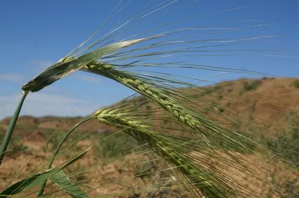

农作物与经济植物 · 植物界
大麦 Hordeum vulgare

大麦是重要的谷物，可制麦芽用于酿造啤酒和威士忌，籽粒还可做饲料与麦片，耐寒耐旱，适应性很广。
- 分类
- 门被子植物门纲单子叶植物纲目禾本目科禾本科属大麦属
- 栖息环境
- 温带与高原的平原、旱地，耐寒耐旱耐盐碱，适应性强
- 地理分布
- 原产西亚，现广泛栽培于欧洲、中国、俄罗斯、加拿大等地
- 保护级别
- 暂无评估（栽培作物）
物种志
大麦是一年生草本，株高 0.6–1.2 m，须根系，茎秆直立、中空有节。叶片披针形，叶耳发达。穗状花序顶生，小穗多三联生于穗轴两侧，每小穗含一朵小花，自花授粉，成熟时麦穗常下垂，籽粒带稃或裸粒，腹面有纵沟。按棱数可分为二棱大麦和六棱大麦，二棱大麦籽粒大、淀粉含量高，适合酿造。
大麦原产西亚新月沃地一带，是世界上最古老的栽培作物之一，已有约 1 万年栽培历史，古埃及人用它酿造啤酒。它耐寒、耐旱、耐盐碱，适应性强，比小麦更耐瘠薄，从北欧到青藏高原都有种植。大麦籽粒经发芽制成麦芽，是啤酒与威士忌酿造的核心原料；籽粒可制成麦片、糌粑等食品，也可作饲料。中国西藏的青稞是大麦的一个变种，是高原地区的主粮。
形态与习性
- 株高0.6–1.2 m
- 花序穗状花序，小穗多三联
- 类型二棱大麦与六棱大麦
- 用途制麦芽酿造啤酒与威士忌
- 食用可制麦片、糌粑等食品
- 耐性耐寒、耐旱、耐盐碱
趣味知识
- 大麦约 1 万年前在西亚被驯化，是世界上最古老的作物之一。
- 啤酒和威士忌的酿造就靠大麦发芽制成的麦芽。
- 西藏的青稞是大麦的一个变种，是高原居民的主粮。